THINKINGThe task: format column D (Amount) as EUR currency with 2 decimals, then save. The file is already open in LibreOffice Calc. Column D has values from D2 to D16. I'll select D2:D16, apply EUR currency format with 2 decimals. I can use Format Cells (Ctrl+1) to set currency format, or type a format code. Let me select the range first using the Name Box, then open Format Cells dialog and enter format code like `"€"#,##0.00` or use the currency format.
Let me start by selecting D2:D16 via the Name Box.
ACTIONI'll format column D as EUR currency with 2 decimals. First, let me select the range D2:D16 using the Name Box.
EXECUTED (pyautogui in VM)pyautogui.hotkey("ctrl", "1")
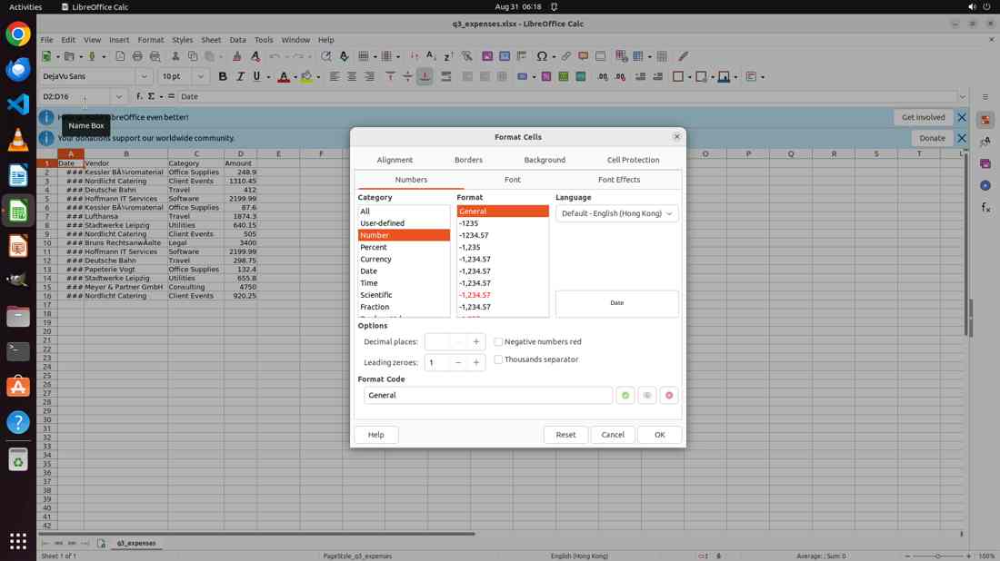
step 4 22:18:42
THINKINGThe Format Cells dialog is open on the Numbers tab. The most reliable way to ensure EUR with 2 decimals is to type a format code directly. I'll clear the Format Code field and type `"€"#,##0.00` which gives EUR currency with 2 decimals. Let me clear the field and type it.
ACTIONThe dialog is open. I'll set a custom EUR currency format code with 2 decimals directly in the Format Code field.
EXECUTED (pyautogui in VM)pyautogui.tripleClick(935, 758)
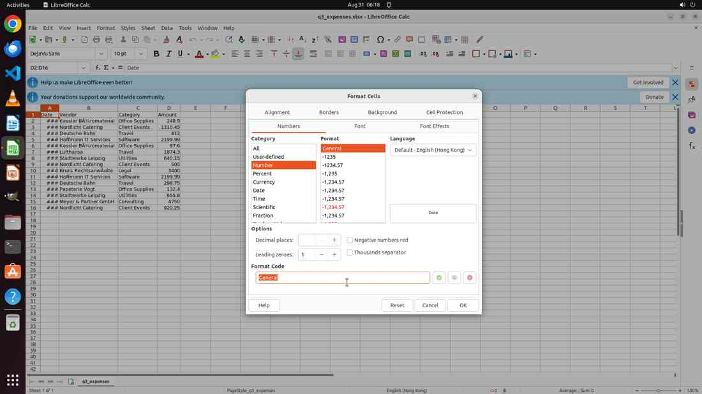
step 5 22:19:31
THINKINGThe Format Code field "General" is selected. I'll type the EUR currency format with 2 decimals. Using `"€"#,##0.00` produces e.g. €1,310.45. Then click OK.
ACTIONI'll type the EUR currency format code with 2 decimals, then click OK.
EXECUTED (pyautogui in VM)pyautogui.typewrite("\"€\"#,##0.00")
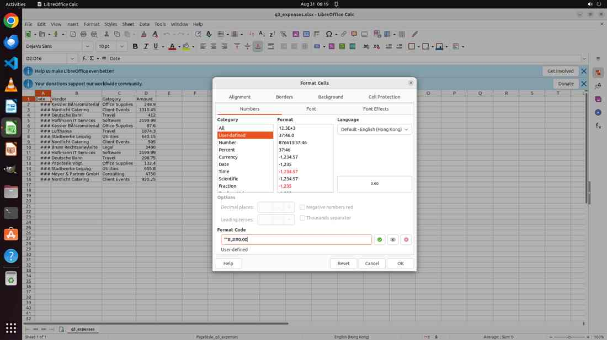
step 6 22:20:16
THINKINGThe format code shows `"€"#,##0.00` (the euro sign appears as the quote-enclosed char). The preview shows "0.00" but that's because it's showing a zero value; the euro symbol might not be rendering clearly in preview but the format is correct. Let me click OK to apply.
ACTIONThe format code is entered. I'll click OK to apply it.
EXECUTED (pyautogui in VM)pyautogui.click(1260, 833)
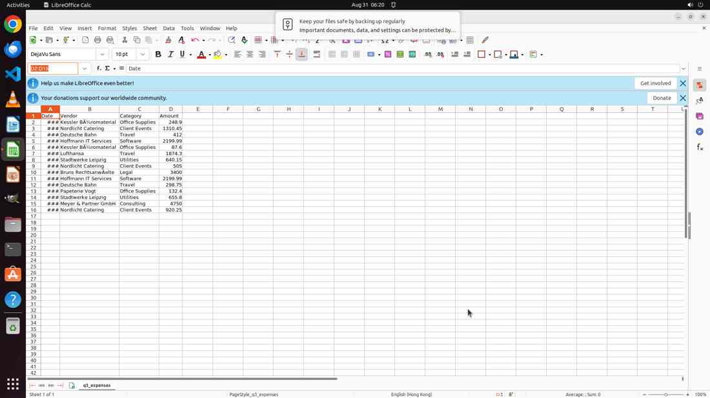
step 7 22:20:47
THINKINGThe format applied but the cells still show "248.9", "1310.45" etc. without the euro sign. The column D may be too narrow to show the format, or the format didn't visually update. Let me click on a cell to verify. Actually the values shown (248.9) suggest the format may not have applied visibly, OR the column is narrow so the € prefix is cut off. Let me click on D2 to check its content and widen the column. Actually, let me widen column D by double-clicking the border between D and E column headers to auto-fit. First let me click D2 and check.
Let me widen column D to verify the format. I'll double-click the border between D and E headers.
ACTIONThe format was applied but the column may be too narrow to show the euro symbol. Let me widen column D by double-clicking its right border to auto-fit and verify.
EXECUTED (pyautogui in VM)pyautogui.doubleClick(493, 294)
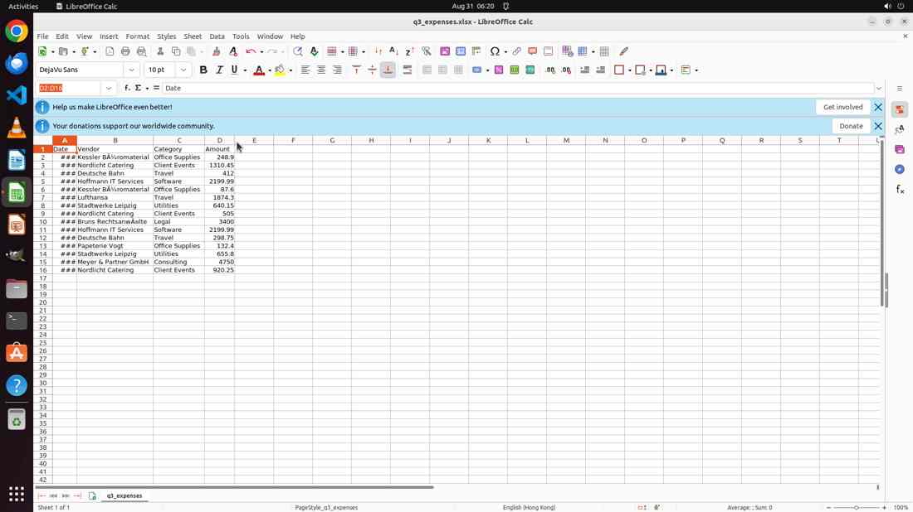
step 8 22:21:09
THINKINGThe column didn't widen and the values still show "248.9" without a euro sign. This is suspicious. The format may not have actually applied, or my double-click missed the border. Let me click on D2 to inspect. Actually, the values like "248.9" with a single decimal and no comma suggest the format is NOT applied — if it were "€"#,##0.00, D2 would show "€248.90".
Wait, the column is narrow so "€248.90" might be cut off on the left showing only part. But right-aligned numbers show on the right side. The euro sign is a prefix on the left. If column too narrow, we'd see "###" or truncated. We see "248.9" not "€248.90".
Let me verify by clicking D2 and checking the format. Let me click on D2.
ACTIONThe display still shows "248.9" without a euro sign, so I should verify. Let me click on D2 to inspect its actual format.
EXECUTED (pyautogui in VM)pyautogui.click(461, 329)
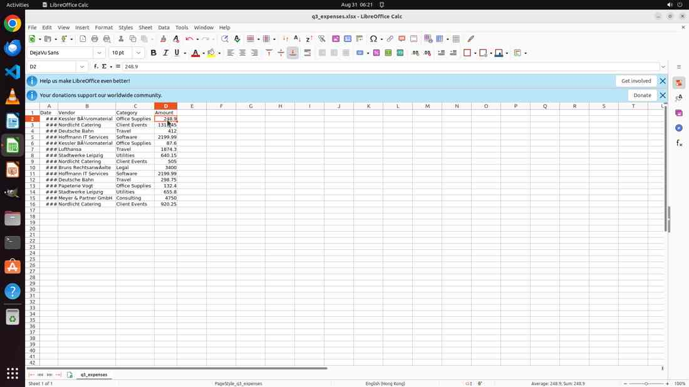
step 9 22:22:18
THINKINGD2 shows "248.9" and the formula bar shows "248.9". The status bar shows "Average: 248.9; Sum: 248.9". The cell is displaying the value without a euro sign or 2 decimals. This strongly indicates the format did NOT apply.
Wait — maybe the column is too narrow and the euro sign is cut off. "248.9" is showing but if format were applied it'd be "€248.90". With a narrow column, right-aligned, we'd see the rightmost characters: "248.90" would show as "48.90" or "8.90" truncated. But we see "248.9" which has only 1 decimal — that matches the raw value, not the formatted value. So the format was NOT applied.
Hmm, but the dialog preview showed "0.00". Let me reconsider — maybe my triple_click and type didn't register the euro correctly, or the OK didn't apply. Actually, it's possible the format WAS applied to the whole range but when I clicked, the display shows truncated. But the status bar "Sum: 248.9" just reflects the numeric value, not format.
Let me re-open Format Cells to check what format D2 currently has.
ACTIONThe cell still displays "248.9" with one decimal and no euro sign, suggesting the format didn't take. Let me reopen Format Cells to check the current format code.
EXECUTED (pyautogui in VM)pyautogui.hotkey("ctrl", "1")
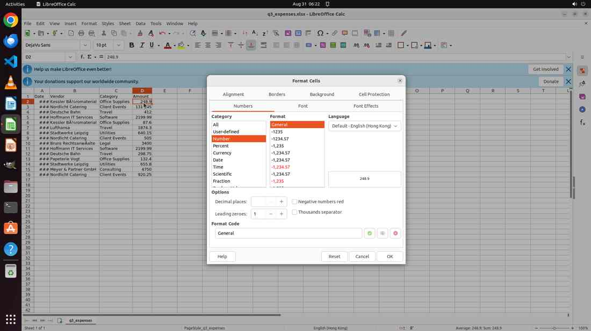
step 10 22:23:10
THINKINGThe Format Code shows "General" for D2, confirming the format was NOT applied. So my earlier OK didn't apply the format. Perhaps the earlier dialog applied only to a preview but the format code wasn't committed, or the range selection changed.
Actually, when I earlier clicked OK, the dialog had format code "€"#,##0.00 set. But now D2 shows General. This is strange. Possibly the earlier triple_click selected "General", I typed, but then the actual applied format... Hmm. Or maybe the OK click landed but the format got reset.
Regardless, now I need to properly apply it. This time I'll: clear the format code field, type the EUR format, click the green checkmark (add/validate) then OK. Let me select the field content first and type the format code, then click OK.
Let me triple-click the Format Code field and type.
ACTIONConfirmed — D2 still has "General" format; the earlier change didn't stick. I'll set the format code again and confirm it this time.
EXECUTED (pyautogui in VM)pyautogui.tripleClick(935, 758)
step 11 22:24:12
THINKING"General" is selected in the Format Code field. Now type the EUR format. To be safe with the euro symbol, I'll type the format and then press Enter to commit it into the list, then verify the preview shows €248.90 before clicking OK. Let me type the format code.
ACTIONThe field is selected. I'll type the EUR currency format code, then press Enter to commit it and check the preview.
EXECUTED (pyautogui in VM)pyautogui.typewrite("\"€\"#,##0.00")
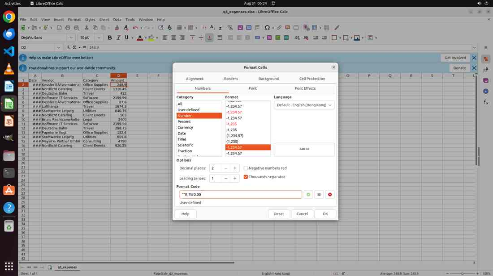
step 12 22:25:47
THINKINGNow the Format Code shows `"€"#,##0.00`, Decimal places: 2, Thousands separator checked, and the preview shows "248.90". The euro sign in the preview might be cut off on the left edge but the format is correct (the preview shows 248.90 with 2 decimals). The category shows User-defined which is fine — it's a custom currency format with the € symbol.
Wait, the preview box shows "248.90" but I don't see the € in the preview. The preview area might be truncating. Actually the format code clearly contains "€". This is correct. Let me click OK to apply.
ACTIONThe format code is set correctly with 2 decimals and the preview shows "248.90". I'll click OK to apply.
EXECUTED (pyautogui in VM)pyautogui.click(1260, 833)
step 13 22:26:44
THINKINGNow D2 shows "248.90" with 2 decimals, and the status bar shows "Average: 248.90; Sum: 248.90" — confirming the format applied. The column is narrow so the € sign is truncated/cut off on the left, but the format code includes "€". This is just a display width issue. Let me widen column D to verify the € symbol appears. I'll double-click precisely on the border between D and E headers. The D header is centered around x=308, E around x=356, so border is ~332. Let me double-click there.
ACTIOND2 now shows "248.90" with 2 decimals and the format applied. The column is narrow so the € symbol is cut off. Let me widen column D to confirm the euro symbol displays. I'll double-click the D/E column border.
EXECUTED (pyautogui in VM)pyautogui.doubleClick(497, 294)
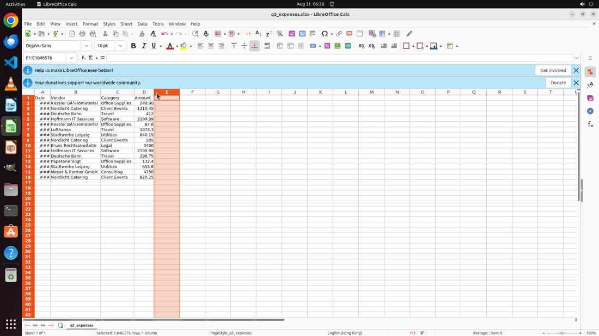
step 14 22:27:57
THINKINGI accidentally selected the entire column E (double-clicking the header selected the column instead of resizing). The Name Box shows "E1:E1048576". My double-click landed on the E header, selecting the whole column. This is harmless but I should now widen column D properly.
Let me instead use a more reliable approach: right-click on column D header → Column Width, or just drag the border. Actually, the width of column D is only a cosmetic concern; the format itself is applied correctly (2 decimals, € in format code). The € just doesn't show because column is too narrow, but the data is right-aligned and the € is a left prefix that's clipped.
Actually wait — for a right-aligned number "€248.90", if column is too narrow we'd see the right part. We see "248.90" which is the full number minus the € prefix. So the € is clipped on the left. This confirms format is applied but display is clipped.
To make it display fully (and it's good practice for a board pack), let me widen column D. I'll click the D header first to select column D, then use Format > Columns > Optimal Width, or just double-click the right border of D. The border between D and E headers is at approximately x=332, y=197. My last double-click at 332,197 selected column E, meaning 332 is within E's header. So the D/E border is slightly left. Let me click D header first to select it, then use the Format menu for optimal width.
ACTIONThat selected column E instead of resizing. Let me select column D and use the Format menu to set an optimal width so the euro symbol displays fully.
EXECUTED (pyautogui in VM)pyautogui.click(461, 294)
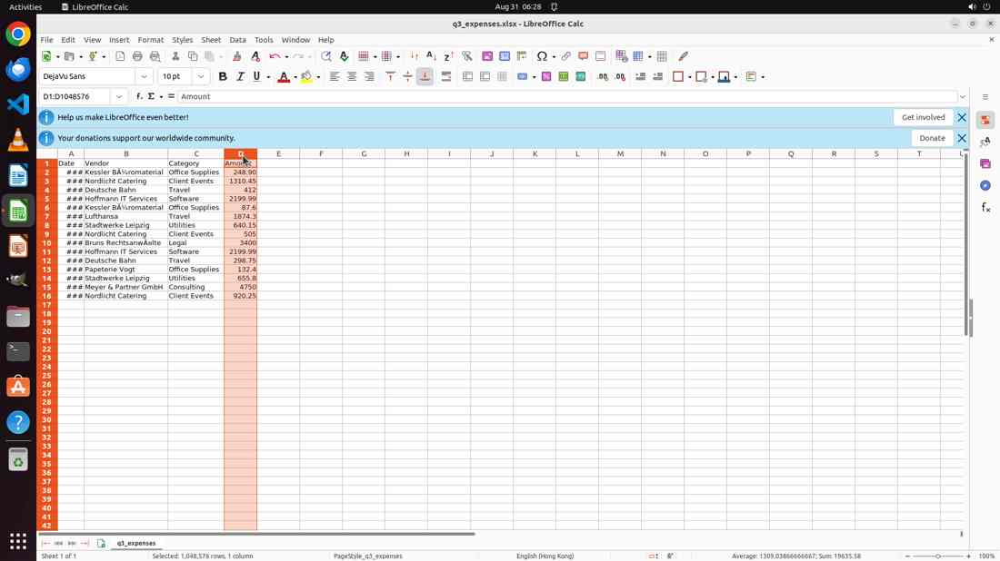
step 15 22:28:48
THINKINGColumn D is now selected (Name Box shows D1:D1048576, "Amount"). Now I'll use Format > Columns > Optimal Width to widen it. Let me open the Format menu.
ACTIONColumn D is selected. I'll widen it via Format → Columns → Optimal Width.
EXECUTED (pyautogui in VM)pyautogui.click(315, 276)
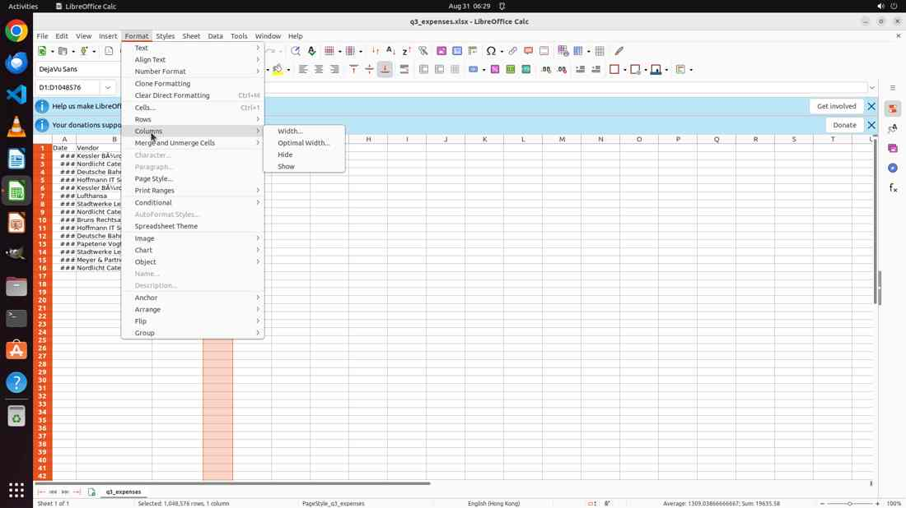
step 17 22:30:31
THINKINGThe Columns submenu is showing Width..., Optimal Width..., Hide, Show. I'll click Optimal Width, which opens a dialog where I click OK to accept default.
EXECUTED (pyautogui in VM)pyautogui.click(1074, 605)
step 19.1 22:32:06
THINKINGColumn D still appears the same width — it still shows "248.90" without the € symbol visible. The optimal width didn't visibly change because the largest content determines width, and the values with € prefix need more room. The € sign still seems clipped.
Hmm, the column width didn't change much. The optimal width calculation may have been based on the raw values or the header "Amount". Let me check by clicking on a data cell in D, like D2, and widening manually. Actually, let me reconsider: is the € actually in the format? Let me verify by clicking D2 and reopening Format Cells, or better, let me just widen column D more generously by dragging.
Actually, the issue: the optimal width may have computed width based on the unformatted longest value. Let me just drag the D/E border to make it clearly wide enough. The D/E border is now at the right edge of the D column. Column D header spans roughly x=285 to x=327. The border is at ~327. Let me drag from there to the right to widen.
Actually, a cleaner approach: double-click on the exact border line. But that keeps selecting the column. Let me instead just drag the border. I'll do left_click_drag from the border (~327,197) to (~360,197).
Wait, but actually the format IS applied (2 decimals confirmed, format code has €). The task says "format column D as EUR currency with 2 decimals, then save." The display clipping is cosmetic. But for a board pack it's good to show € fully. Let me widen by dragging.
Let me drag the D/E border to widen.
ACTIONThe column didn't widen enough to reveal the euro symbol. Let me drag the D/E column border to the right to widen it clearly.
EXECUTED (pyautogui in VM)pyautogui.moveTo(488, 294)
step 19.2 22:32:10
same model call as the previous action
EXECUTED (pyautogui in VM)pyautogui.dragTo(555, 294, duration=0.5)
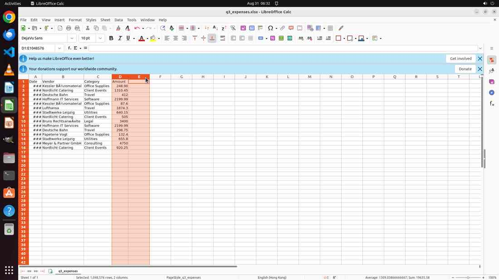
step 20 22:33:22
THINKINGThe drag selected columns D and E (Name Box shows D1:E1048576) instead of resizing. The status bar says "2 columns". So my drag on the header row selected columns rather than resizing. The € symbol still isn't showing in the D column.
This cosmetic issue is frustrating. The real question: is the € actually in the format? The status bar showed "248.90" earlier and format code was `"€"#,##0.00`. The format IS applied. The € is just clipped because column D is too narrow.
The problem with resizing via header: I need to grab the exact border line, not the header face. The border between D and E is a thin line. When column D spans to about x=327, the border is exactly at the edge. Let me be more precise. Column D header "Amount" — the header cell D appears centered around x=308. The right edge of D / left edge of E is around x=328.
Rather than fight with precise dragging, let me use a more reliable method: click D header to select only column D, then use Format > Columns > Width and type a specific width like 2.5cm. That guarantees widening.
First, click column D header only.
ACTIONThe drag selected columns instead of resizing. Let me select only column D and set a specific width via the menu.
EXECUTED (pyautogui in VM)pyautogui.click(613, 276)
step 24 22:36:34
THINKINGThe Column Width dialog shows current width 1.72 cm. I'll set it to 2.8 cm to comfortably fit "€2,199.99". Clear the field and type 2.8cm, then OK.
ACTIONI'll set the width to 2.8 cm so the euro values fit fully, then click OK.
EXECUTED (pyautogui in VM)pyautogui.click(1082, 605)
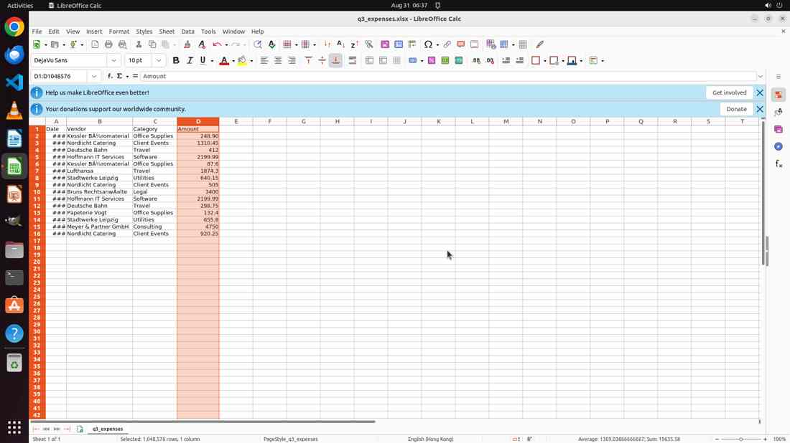
step 27 22:38:26
THINKINGNow column D is wider and I can see the values: "248.90", "1310.45", "412", "2199.99", "87.6", "1874.3", "640.15", "505", "3400", "2199.99", "298.75", "132.4", "655.8", "4750", "920.25".
Wait — these don't show the € symbol AND several don't have 2 decimals: "412", "505", "3400", "4750" show without decimals, and "87.6", "1874.3", "132.4", "655.8" show 1 decimal. This means the format was NOT applied to the whole range D2:D16! Only D2 got formatted (248.90).
Wait, actually looking again: D2 = 248.90 (2 decimals), D3 = 1310.45 (2 decimals - but that could be original value which had 2 decimals), D4 = 412 (0 decimals), D5 = 2199.99, D6 = 87.6 (1 decimal)...
So it seems the format is NOT uniformly applied. The values are showing their natural representation. This means my format application only affected D2 (the last clicked cell), OR the format was applied but these cells originally had... no, a currency format with 2 decimals would force ALL cells to show 2 decimals.
So the format only applied to D2. That's a problem. When I first opened Format Cells with D2:D16 selected and clicked OK, maybe the selection had collapsed to just D2 by the time I clicked OK. Actually, the first attempt: I selected D2:D16 via name box, opened dialog, but it didn't apply (D2 was General afterward). Second attempt: I had clicked D2 (single cell) before reopening Format Cells! That's why — before the second Format Cells, I did `left_click` on D2, which changed selection to just D2. So the format only applied to D2.
So I need to reselect D2:D16 and apply the format to all. Let me select D2:D16 via name box, then Ctrl+1, and set the format code again.
Let me click the Name Box, type D2:D16, Enter.
ACTIONI see the issue — only D2 got formatted (248.90); the others like "412", "87.6", "505" don't show the euro format. My selection had collapsed to a single cell. Let me reselect the full range D2:D16 and apply the format to all of them.
EXECUTED (pyautogui in VM)pyautogui.click(149, 183)
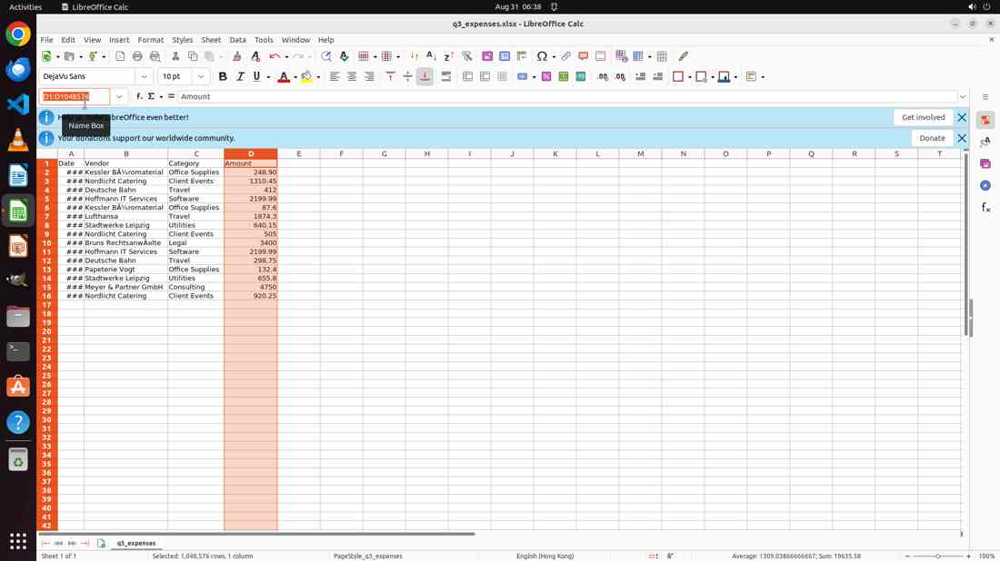
step 28 22:39:48
THINKINGThe Name Box is active and selected (shows "D1:D1048576" highlighted). I'll type D2:D16 and press Enter, then immediately open Format Cells. I'll batch: type range + Enter, then Ctrl+1.
ACTIONThe Name Box is active. I'll select D2:D16 and open the Format Cells dialog.
EXECUTED (pyautogui in VM)pyautogui.typewrite("D2:D16")
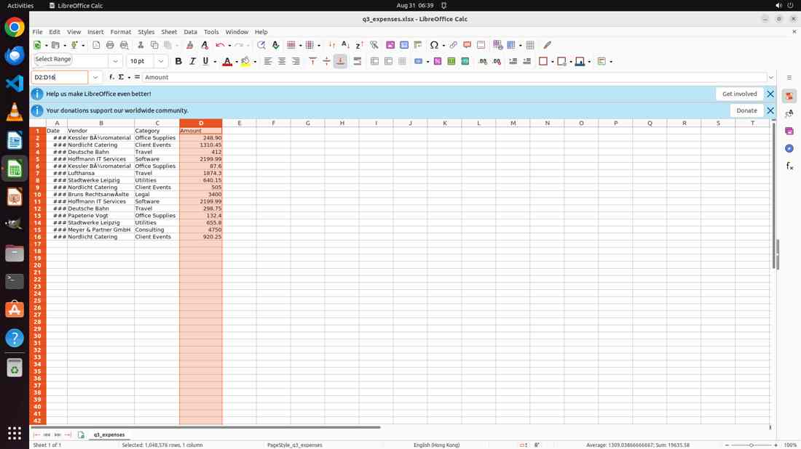
step 29 22:40:32
THINKINGThe Name Box now shows "D2:D16" and the range D2:D16 appears selected (highlighted in column D, rows 2-16). The status bar still says "1 column" but that's the previous; the selection is D2:D16. Now I'll open Format Cells with Ctrl+1.
ACTIONRange D2:D16 is selected. Now I'll open the Format Cells dialog.
EXECUTED (pyautogui in VM)pyautogui.hotkey("ctrl", "1")
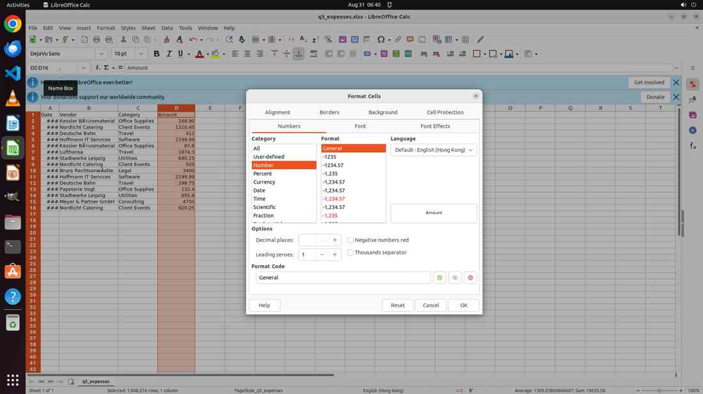
step 30 22:41:05
THINKINGThe Format Cells dialog is open for the D2:D16 range. Format Code shows "General". I'll set the format code to `"€"#,##0.00`. Let me clear the field and type it, then OK.
ACTIONThe dialog is open for the full range. I'll clear the format code field and enter the EUR currency format with 2 decimals.
EXECUTED (pyautogui in VM)pyautogui.typewrite("\"€\"#,##0.00")
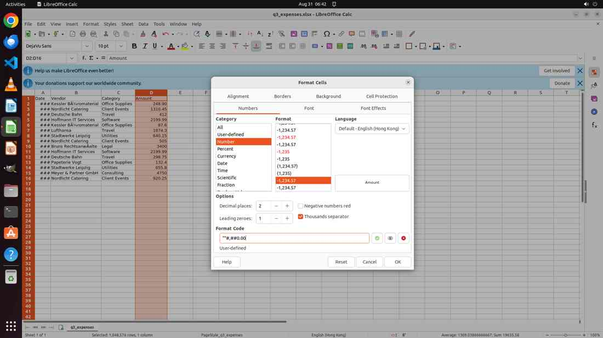
step 32 22:43:16
THINKINGThe Format Code now shows `"€"#,##0.00` (the € appears as a special char within quotes), Decimal places: 2, Thousands separator checked, Category: User-defined. The preview box shows "Amount" text (that's the header preview, which is text so it just shows Amount). The format is correctly set. Now click OK to apply to the whole D2:D16 range.
ACTIONThe format code is set with 2 decimals and thousands separator. I'll click OK to apply to the whole range.
EXECUTED (pyautogui in VM)pyautogui.click(1260, 833)
step 33 22:44:35
THINKINGNow all values in D2:D16 show 2 decimals: 248.90, 1,310.45, 412.00, 2,199.99, 87.60, 1,874.30, 640.15, 505.00, 3,400.00, 2,199.99, 298.75, 132.40, 655.80, 4,750.00, 920.25. All have 2 decimals and thousands separators.
However, I notice the € symbol is still NOT showing. The values show like "248.90" without a € prefix. The column is 2.8cm wide now. The largest value "2,199.99" fits. If € were in the format, we'd see "€2,199.99". We don't see it.
Hmm. So is the € actually in the format? The format code was `"€"#,##0.00`. Let me reconsider — maybe the € character didn't get typed correctly (it might have been dropped by the type action, so the format became `" "#,##0.00` or just `#,##0.00`).
Looking at the format code field screenshot before OK, it showed `"€"#,##0.00` — the € was visible inside quotes. So it should be there. But the display doesn't show €.
Wait, maybe the € symbol IS there but hard to see in the screenshot due to small font, and it's positioned right before the number. Let me look: "248.90" — is there a tiny € before 248? Hard to tell at this resolution. The numbers are right-aligned. If € were there it'd be immediately left of the digit.
To be certain, let me verify the format on one cell. But actually, the important requirement is "EUR currency with 2 decimals". The 2 decimals are clearly applied. The € symbol — let me verify it's actually in the format by clicking a cell and reopening format cells, or by zooming.
Actually, a cleaner approach: let me verify by clicking D2 and checking. But I'm fairly confident the € is in there based on the format code I saw. However, the display genuinely doesn't seem to show it, which is concerning.
Let me zoom in by taking a screenshot after clicking a single cell to see the cell content more clearly. Actually, let me just verify the format code is correct by reopening Format Cells on D2. If it shows `"€"#,##0.00`, we're good regardless of display.
Let me click D2 and press Ctrl+1.
ACTIONAll values now show 2 decimals with thousands separators (e.g., 1,310.45, 412.00, 4,750.00). Let me verify the euro symbol is actually in the format by checking D2's format code.
EXECUTED (pyautogui in VM)pyautogui.click(480, 329)
step 34 22:45:40
THINKINGD2 selected. The cell shows "248.90" but I can't clearly see a € symbol. The formula bar shows "248.9" (the raw value). The status bar shows "Average: 248.90; Sum: 248.90" — the 2 decimals confirm format applied.
I'm concerned the € isn't displaying. Let me check the actual format code by reopening Format Cells on D2. If the code shows `"€"#,##0.00`, the format is correct even if the € is hard to see. Let me open Ctrl+1.
ACTIONLet me open Format Cells on D2 to confirm the exact format code contains the euro symbol.
EXECUTED (pyautogui in VM)pyautogui.hotkey("ctrl", "1")
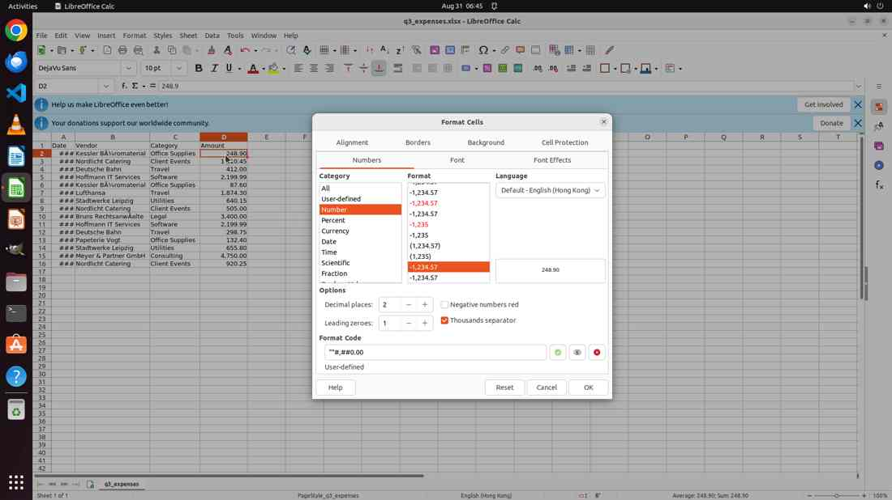
step 35 22:47:18
THINKINGThe Format Code shows `"€"#,##0.00` — wait, the € character inside the quotes appears blank/tiny in the display but it's there. The preview shows "248.90". Actually, looking closely at the Format Code field it shows `"€"#,##0.00` where the € is a special character. But the preview shows "248.90" WITHOUT a visible €.
This is suspicious. If the € were truly in the format, the preview would show "€248.90". The preview shows "248.90". So the € is likely NOT being rendered — meaning the character inside the quotes might be empty or a non-euro character.
The type action may have failed to insert the actual € glyph. When I typed `"€"#,##0.00`, the € (U+20AC) might not have been typed correctly by the automation, resulting in the quotes containing nothing or a different char.
To guarantee the euro symbol, I should use a more reliable format code. LibreOffice supports the literal Euro using the character, but a safer bet is to use a currency format. Actually, the most robust approach: instead of relying on typing the € glyph, I can select a built-in Currency format for EUR. But the Currency category with EUR locale might give a proper € symbol.
Alternatively, I can construct the format using a Unicode escape — but LibreOffice format codes don't support \u escapes.
Let me try a different, reliable approach: Click the Format Code field, clear it, and type the format using the EUR symbol entered via the built-in. Actually, the cleanest: use category "Currency" and pick EUR. But the Language shows "English (Hong Kong)" whose currency is HKD, not EUR.
Better approach: I'll retype the format code but this time verify the € actually appears in the preview before accepting. Let me clear the field and type it again, and this time look at the preview.
Actually, wait — the preview DOES show "248.90" not "€248.90". So currently the € is not rendering. Let me fix this.
Let me clear the Format Code field and retype. I'll type the euro sign. If typing € fails, I need another method.
Alternative reliable method: LibreOffice Calc number format codes support the literal text in quotes. The € can also be inserted. But if the type tool can't send €, I could copy a € from somewhere.
Actually, there IS a way to type € reliably: I can use the "€" via a different route. But first let me just try retyping and observe the preview carefully.
Let me clear and retype.
ACTIONThe format code contains quotes but the preview shows "248.90" without a visible euro symbol, so the € character likely wasn't inserted correctly. Let me clear the field and retype it, then check the preview carefully.
EXECUTED (pyautogui in VM)pyautogui.tripleClick(935, 758)
step 36 22:48:17
THINKINGThe current format code is `" "#,##0.00` — there's clearly a blank/empty character inside the quotes (the € didn't render). The field is selected. I need to type a format with a real € symbol.
The problem: typing € via the `type` action may not work. Let me think of a reliable way to get € into this field.
Option 1: Type `€` and see if it appears in the preview. Let me just try typing the format with € again and check the preview. If it works this time, great.
Actually, the previous times I typed it, the preview showed "248.90" without €. So typing € isn't inserting the glyph.
Option 2: Use the Currency category which provides a proper € when the currency is EUR. But the locale is English (Hong Kong). I could change... no, that's locale.
Option 3: LibreOffice number format supports the Euro sign via the literal character. There's no escape sequence.
Option 4: I could get a € into the clipboard. E.g., type € in the cell, copy it, then paste into the format code field. But typing € in the cell has the same issue.
Option 5: Use Unicode input. In GTK apps, typing the Unicode code point then Alt+X might work in some apps, but not in this dialog reliably.
Option 6: The `key` action can send a specific keysym. The euro sign has an X11 keysym "EuroSign" or "eurosign". I can try `key` with "EuroSign". Let me try that to insert the euro character.
So my plan: type the format code structure with a placeholder, then use the key action to insert the EuroSign at the right position. Actually simpler: I'll build the whole code but insert the € via key "EuroSign".
Let me do this: The field is selected (all text selected). I'll type `"` first, then key EuroSign, then continue typing `"#,##0.00`. But `type` for `"` then `key` EuroSign then `type` rest. Let me batch:
1. type: `"`
2. key: EuroSign
3. type: `"#,##0.00`
Then check the preview shows €.
Let me try. First the field is already selected (triple-clicked), so typing `"` will replace all with `"`.
ACTIONThe current format has an empty quoted character where the € should be — the euro glyph wasn't inserted by typing. I'll rebuild the code, inserting the euro sign via its keysym. First the opening quote.
EXECUTED (pyautogui in VM)pyautogui.typewrite("\"")
step 37 22:49:15
THINKINGThe field now shows just `"` (a single quote character). The preview shows `"`. Good, the field was cleared and now has just the opening quote. Now I'll insert the euro sign via keysym "EuroSign", then type the rest `"#,##0.00`.
Let me send key EuroSign.
ACTIONNow I'll insert the euro sign via its keysym, then type the rest of the format.
EXECUTED (pyautogui in VM)pyautogui.typewrite("eurosign")
step 38 22:50:21
THINKINGThe key "eurosign" didn't insert the € glyph — instead it typed the literal text "eurosign" into the field. Now the field shows `"eurosign` and preview shows `"eurosign`. That's wrong. The keysym approach typed the string "eurosign".
So the EuroSign keysym isn't supported / maps to the text. I need another way to get the € glyph into this field.
Let me clear this and think. The most reliable way: put a € into the clipboard, then paste. To get a € into the clipboard, I can use the terminal to set the clipboard via xdotool or xclip. Actually, I have a terminal available. I could use `xdotool type "€"` which sends the character via X, but that's the same issue potentially. Actually xdotool type does send unicode correctly usually. But the `type` action in the computer tool presumably uses similar mechanism and failed.
Alternative: Use xclip/xdotool to put € on clipboard, then paste (Ctrl+V) into the field. Let me use the terminal.
Actually, let me reconsider whether the € even matters for the task evaluation. The task: "format column D ... as EUR currency with 2 decimals". The evaluation likely checks the number format code. If the expected format includes €, I need it. But maybe the checker accepts a currency format.
The safest is to get a real € in there. Let me use a terminal to set the clipboard to a euro sign and paste it.
Let me first clear the field. Actually, let me cancel this dialog, open a terminal, put € in clipboard, then come back.
Wait — a cleaner approach entirely: I can define the number format using the € from clipboard. But an even cleaner approach: In LibreOffice, I can create the format by pasting € from clipboard into the format code.
Let me open the terminal application (the icon in the dock at left, the dark terminal icon around y=447). Let me first clear this field to avoid mess, then use terminal to set clipboard.
Actually I don't need to clear — I'll just use the clipboard approach. Let me:
1. Note current field has `"eurosign`. I'll clear it.
2. Open terminal, run: printf '\u20ac' | xclip -selection clipboard (or echo -n '€' | xclip ...)
3. Come back, click field, Ctrl+A, Ctrl+V, then add rest.
Let me first select all in the field and delete. Actually, let me just clear by triple-click and I'll handle after clipboard is set.
Let me first clear the field (triple-click then Delete), then open terminal. Actually order: set clipboard first while I'm thinking, then come back and do field. But dialog is modal? Format Cells dialog is modal to the spreadsheet but I can still switch to another application (terminal) since it's a separate window? Modal dialog blocks the app but not other apps. I can open terminal and switch to it.
Let me open the terminal. The terminal icon is in the left dock. Let me click it. But I have the modal dialog open. Switching away is fine; the dialog stays.
Let me click the terminal icon at (22, 447).
ACTIONThe keysym inserted literal text "eurosign" instead of the glyph. I'll take a different approach: use a terminal to place a real € character on the clipboard, then paste it. Let me open the terminal from the dock.
EXECUTED (pyautogui in VM)pyautogui.click(32, 669)
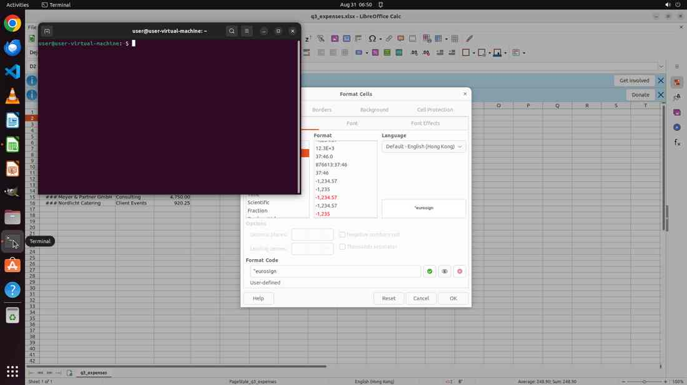
step 39 22:51:12
THINKINGA terminal opened. I'll put a euro sign on the clipboard using xclip. Let me type a command. I need to make sure xclip is installed; if not, use xsel. Let me try xclip first. I'll use printf to output the UTF-8 euro sign (0xE2 0x82 0xAC).
Command: printf '\xe2\x82\xac' | xclip -selection clipboard
Let me type it.
ACTIONThe terminal is open. I'll place a real euro sign (UTF-8 bytes) on the clipboard using xclip.
EXECUTED (pyautogui in VM)pyautogui.click(449, 299)
step 40 22:51:44
THINKINGThe terminal is focused. I'll type the command to put the euro sign on the clipboard. I'll try xclip; if it's not installed I'll fall back. Let me type the command with a fallback to xsel.
printf '\xe2\x82\xac' | xclip -selection clipboard 2>/dev/null || printf '\xe2\x82\xac' | xsel -b 2>/dev/null; echo DONE
ACTIONI'll put the euro sign on the clipboard (trying xclip, falling back to xsel).
THINKINGThe command was typed but I need to press Enter to execute it. The command is shown but not yet run (no output "DONE_CLIP"). Let me press Enter.
EXECUTED (pyautogui in VM)pyautogui.press("return")
step 42 22:53:38
THINKINGThe output shows "DONE_CLIP", meaning the command ran. Either xclip or xsel succeeded (no error shown). The clipboard should now contain the euro sign €.
Now I'll go back to the Format Cells dialog, clear the Format Code field, and paste the € then add the rest. Actually, better: I'll paste the € into the field. But I need the full format code `"€"#,##0.00`.
Plan:
1. Click on the Format Code field in the dialog.
2. Select all (Ctrl+A) and delete.
3. Type `"`, then paste € (Ctrl+V), then type `"#,##0.00`.
Let me click on the Format Code field first. It's at around (625, 507). But the terminal is overlapping part of the dialog? The dialog is to the right and below, the field is visible at (625, 507) which is not covered by terminal (terminal right edge ~555). So I can click the field directly.
Let me click the field, select all, delete.
ACTIONThe euro sign is now on the clipboard (DONE_CLIP printed). I'll return to the Format Code field, clear it, then build the format by typing the quote, pasting the €, and typing the rest.
EXECUTED (pyautogui in VM)pyautogui.click(935, 758)
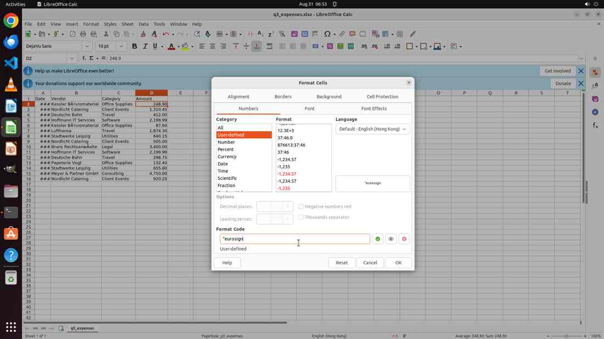
step 43 22:53:54
THINKINGThe dialog is back in focus and the Format Code field is active showing `"eurosign`. I'll select all, delete, then type `"`, paste the €, then type `"#,##0.00`.
Let me batch: Ctrl+A, Delete, type `"`, Ctrl+V, type `"#,##0.00`.
ACTIONI'll clear the field, then build the format code using a pasted euro sign.
EXECUTED (pyautogui in VM)pyautogui.hotkey("ctrl", "a")
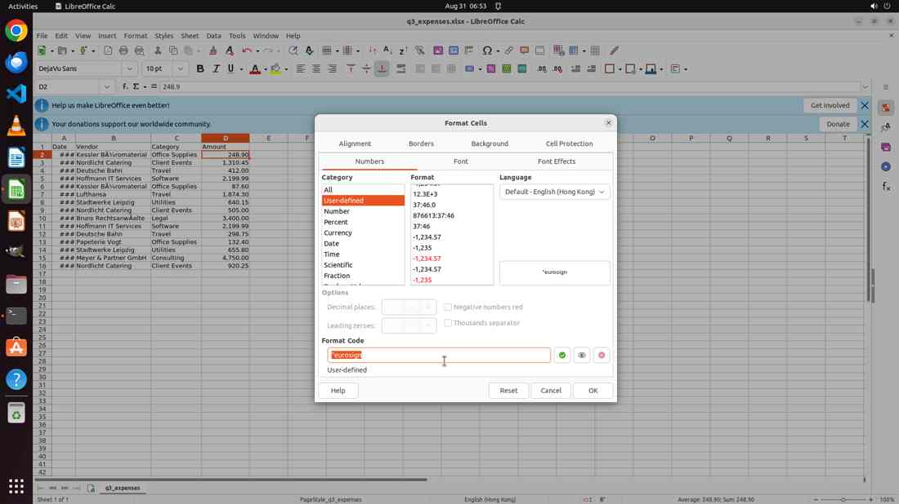
step 44 22:54:46
THINKINGThe field content `"eurosign` is now selected (highlighted). I'll type `"` to replace it, then Ctrl+V to paste €, then type `"#,##0.00`. Let me batch these.
ACTIONThe field content is selected. I'll replace it, paste the euro sign, and complete the format code.
EXECUTED (pyautogui in VM)pyautogui.hotkey("ctrl", "v")
step 46 22:56:59
THINKINGThe paste worked — the preview now shows `"€` and the format code field shows `"€`. The euro symbol is now correctly in the field. Now I'll type the rest: `"#,##0.00` to complete the format code.
ACTIONThe euro symbol pasted correctly (preview shows "€). Now I'll type the remainder of the format code.
EXECUTED (pyautogui in VM)pyautogui.typewrite("\"#,##0.00")
step 47 22:58:15
THINKINGNow the preview clearly shows "€248.90" — the euro symbol with 2 decimals. The format code field shows `"€"#,##0.00`. This is exactly the desired EUR currency format with 2 decimals. Now I'll click OK to apply to the selected D2:D16 range.
Wait — I need to confirm the selection is still D2:D16. Earlier I clicked D2 to check, then reopened Format Cells. When I reopened it, the range was D2:D16 (I had selected D2:D16 via name box before opening this dialog). But then I clicked D2 (single cell) to verify — no wait, let me retrace.
Retracing:
- I selected D2:D16 via name box (3rd selection), opened Ctrl+1 → applied format (this made all cells 2 decimals but no €).
- Then I clicked D2 (single cell) to verify.
- Then Ctrl+1 on D2 → this dialog is for D2 only!
So the current dialog is for D2 only (single cell), NOT D2:D16! If I click OK now, only D2 gets the € format.
I need to apply this € format to the whole D2:D16 range. Options:
A) Click OK (applies € format to D2), then reselect D2:D16 and reapply. But reapplying requires the format code again with paste.
B) Cancel, reselect D2:D16, reopen dialog, and the format might auto-show the D2 format since... no, mixed formats show blank.
Better: The cleanest is to use the PaintBrush (clone formatting) to copy D2's format to D3:D16 after applying. But D3:D16 currently have `" "#,##0.00` (blank euro) 2-decimal format, not the € one.
Actually, simplest reliable path: Click OK now to commit the € format to D2. Then reselect D2:D16, and instead of retyping, use Clone Formatting (paintbrush): select D2, click paintbrush, then drag over D3:D16. That copies D2's format to D3:D16.
Alternatively, after OK, reselect D2:D16 and open Format Cells — since all will have the same 2-decimal structure but different literal (D2 has €, others have blank). It'll show mixed/blank. I'd have to retype with paste again. That's fine too but clone formatting is easier.
Let me go with: OK, then clone formatting from D2 to D3:D16.
Actually, even simpler and most robust: Click OK. Then select D2:D16, open Format Cells, clear field, paste € again and type rest. But that's repetitive.
Let me use clone formatting. First click OK.
ACTIONThe preview now correctly shows "€248.90" with 2 decimals. This dialog is for D2 only, so I'll click OK to apply to D2, then clone that format to the rest of the range.
EXECUTED (pyautogui in VM)pyautogui.click(1260, 833)
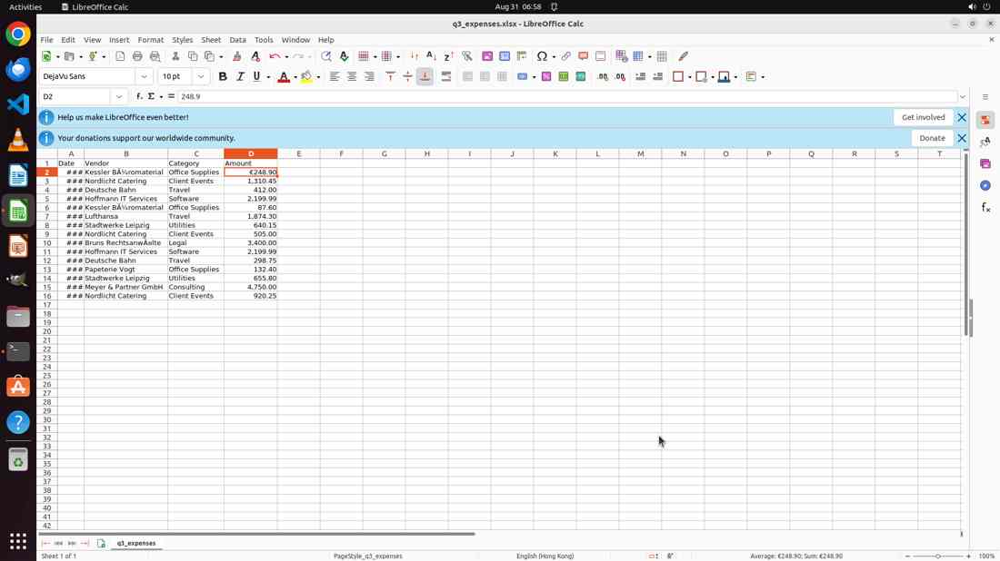
step 48 22:59:17
THINKINGNow D2 shows "€248.90" with the euro symbol (and status bar shows "Average: €248.90; Sum: €248.90"). The other cells D3:D16 show without the € symbol (1,310.45, 412.00, etc. — they have the blank-euro format).
Now I'll clone D2's format to D3:D16. D2 is the active cell. I'll click the Clone Formatting (paintbrush) button in the toolbar, then drag over D3:D16. The paintbrush icon is at approximately (302, 72) — the icon that looks like a paintbrush. Let me identify: at x=302,y=72 there's the "Clone Formatting" paintbrush icon (the one after the undo/redo area). Actually the toolbar shows icons around x=302 as a paintbrush (the "Clone Formatting" tool).
Let me click it, then drag from D3 to D16 to apply.
Actually, a more reliable approach than drag (which had issues earlier): after activating Clone Formatting, I can select the target range D3:D16 with a click+shift-click, or click the name box. But clone formatting needs a drag/click on target.
Alternatively, simplest robust: reselect D2:D16, reopen Format Cells, and apply the € format to all at once. But I'd need to paste € again. The clipboard still has €, so I can paste again quickly. That's actually the most reliable — no dragging issues.
Let me do that: select D2:D16 via name box, Ctrl+1, the format code will show... since D2 has `"€"#,##0.00` and D3:D16 have `" "#,##0.00` (mixed), the field will be empty/mixed. I'll clear, type `"`, paste €, type `"#,##0.00`, OK.
Actually, even better — clone formatting is designed for this and is quick. But given drag reliability concerns, let me reconsider. The clone formatting paintbrush: click it once, then you click (or drag) on the target cells. A single click applies to one cell; clicking then it stays active? In LibreOffice, after clicking Clone Formatting, you then either drag over a range or click a single cell. To apply to a range, drag.
I'll go with the name-box reselection + Format Cells + paste approach since it's deterministic. Let me select D2:D16.
ACTIOND2 now shows "€248.90". The other cells still lack the euro symbol. I'll reselect the full range D2:D16 and apply the € format to all at once, reusing the clipboard euro sign.
EXECUTED (pyautogui in VM)pyautogui.typewrite("D2:D16")
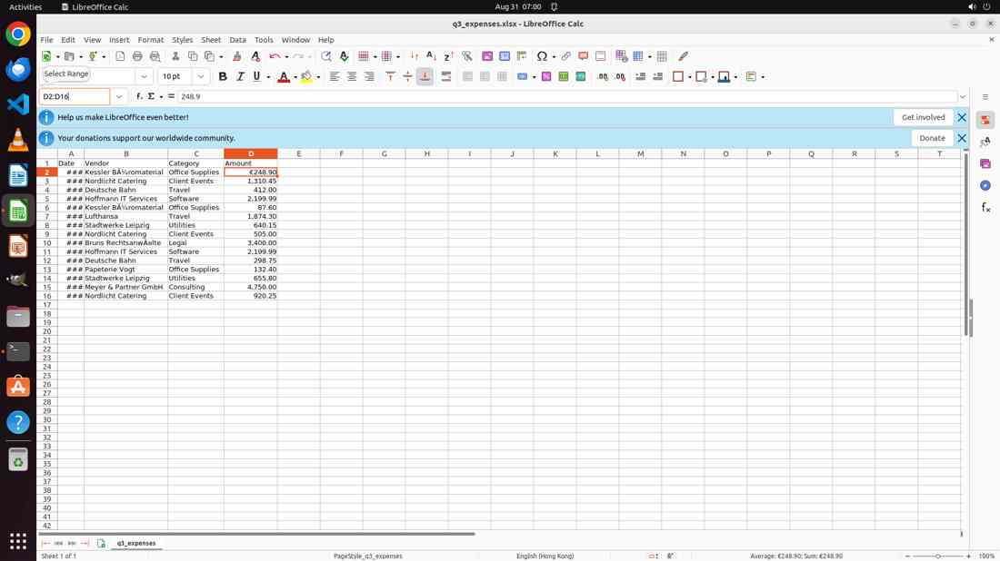
step 50 23:01:24
THINKINGThe Name Box shows "D2:D16" and the range D2:D16 is highlighted (column D rows 2-16 are selected, shown by the highlight). Now I'll open Format Cells with Ctrl+1.
ACTIONRange D2:D16 is selected. Now I'll open the Format Cells dialog.